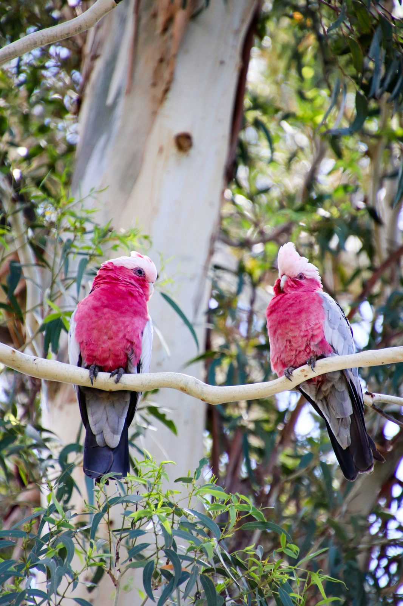
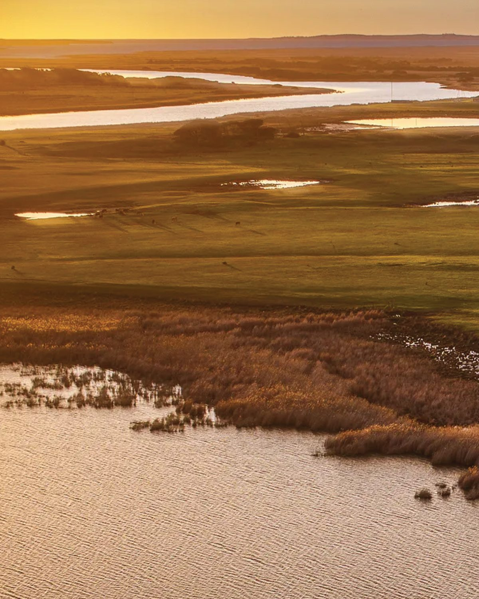
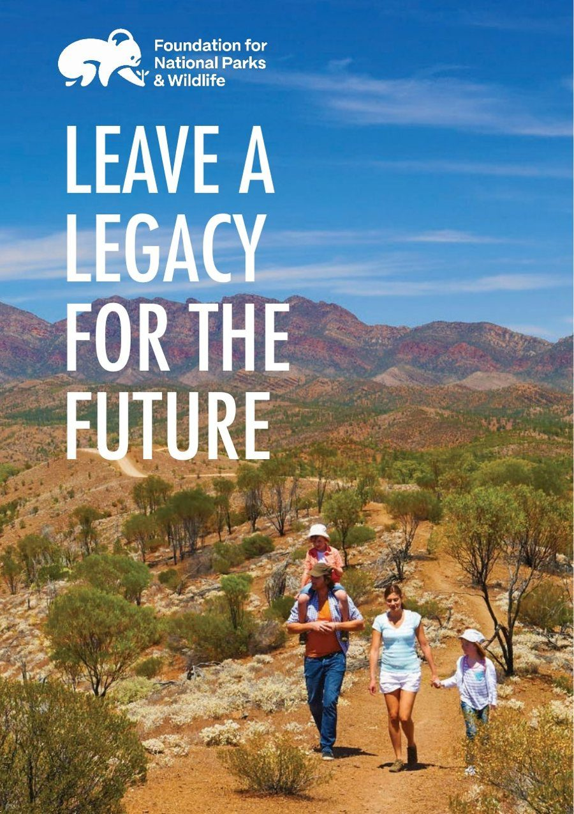

2,086 ha
Morton National Park, NSW‘Kitty’ Catherine Clare White
Thanks to Kitty, 2,086 hectares of bushland were acquired and added to Morton National Park, for future generations to enjoy.
A gift in your will keeps the nature you love living on for the generations who come after you. Whenever you are ready, we would love to talk with you about it.
There is a kind of love that asks for nothing back: a love for places you may never see change, for creatures you will never meet, and for a forest that will stand long after you have gone. A gift in your will for nature is love exactly like that.
Picture the people who come long after us, generations we will never meet, still free to do all the small and ordinary things that make this country feel like home. Picture one of them stopping mid-walk to watch a wedge-tailed eagle ride a thermal across an open sky, or glancing up from the garden as the birds return, season after season, to a country that still has room for them.
A gift in your will helps make certain that world is there, waiting. There are few finer ways to be remembered than as someone who left the future a little wilder, and a great deal more hopeful, than they found it.



Some gifts change a single life. Barbara Harris left one that changed an entire landscape.
When Mundoo Island came onto the market after more than a century of farming, its 1,900 hectares of wetland, saltmarsh and coastal habitat at the Murray Mouth had a narrow window to be saved.
A transformative gift from the Estate of the Late Barbara Harris became the foundation of our contribution. Building on it, we worked with the Ngarrindjeri Aboriginal Corporation and the Australian and South Australian Governments to secure the whole island in 2025, and it is now being added to Coorong National Park.
Mundoo is home to 65 nationally listed threatened species and is a refuge for migratory shorebirds on the East Asian-Australasian Flyway. For thousands of years it has held deep cultural meaning for the Ngarrindjeri people, whose connection to this Country continues to guide its care. Where the land was once grazed, restoration has already begun, rebuilding the island’s natural hydrology and healing its wetlands.
None of it would have happened without Barbara. One person, thinking of the future, can protect an entire island for every generation that follows.
Read the Mundoo Island story →For decades, people have written the wild into their wills. Because of them, whole corners of national parks, reserves and walking tracks exist today, and they will still be there for the generations who follow.
Thanks to Kitty, 2,086 hectares of bushland were acquired and added to Morton National Park, for future generations to enjoy.
Thanks to Kenneth, the reserve was revegetated and given upgraded tracks, new signage and a bird-viewing platform. Kenneth was related to Sir Cecil Hoskins, who helped establish the reserve through a donation to us many years ago.
Thanks to Eulie, important wetland research was supported at a reserve that is a haven for more than 80 species of birds and two species of endangered frogs.
Thanks to Janet, the East Rim Wildflower Walk near Fitzroy Falls, a much-loved 7 km walk, was upgraded for everyone who walks it.
Your gift could leave a lasting legacy for nature.
Talk to us in confidenceYou can direct your gift to the work closest to your heart, or trust us to place it where the need is greatest. Either way, it keeps caring for wild places and wildlife long after your lifetime.

When land of high conservation value comes up, often right beside an existing park, we work with our partners to acquire it and see it added to the national park estate, protected for good.
Projects like Mundoo Island and Remarkable Southern Flinders
We fund recovery programs run with Traditional Owners, researchers, carers and land managers, for flagship species and overlooked ones alike.
Projects like the Warddeken Mayh Recovery Project and the Curb Wombat Mange Program
Through our Landscape Resilience Program we restore country affected by bushfire, flood and clearing, and we stay for the watering, weeding and replanting that follow.
Projects like Yarrahapinni Wetlands and Fire Wise
To be reading this at all, turning over the idea of giving something of yourself to the natural world, is a quietly remarkable thing. It means that somewhere in the way you think about the years ahead, you have made room for the wild.
A gift in your will is one of the most personal decisions you will ever make, and it deserves time, conversation and care. After you have provided for the people you love, even a small share of what remains can help protect a place for good.
A conversation with family or close friends brings clarity, and means your wishes are understood.
Helen can answer your questions in confidence, with no obligation. Get in touch.
Our guide has our legal details and the ways you can leave a gift, and your solicitor will make sure your will says exactly what you intend.
Our page for professionals brings everything together in one place: our legal details and suggested wording, how we handle gifts for a specific purpose, support for executors, and one direct contact for you and your clients.
Whether you have already included us in your will, you are still thinking it over, or you simply have a question, we would be glad to hear from you. If you have already included us, please let us know through the form so we can thank you and understand your wishes. Every conversation is confidential and carries no obligation.
Ask us a question, or let us know you have included us in your will. We will come back to you personally.
The form is taking a while to load. Email fnpw@fnpw.org.au or call 1800 898 626 and we will take your enquiry directly.
Everything you share is kept confidential and handled in line with our privacy policy.